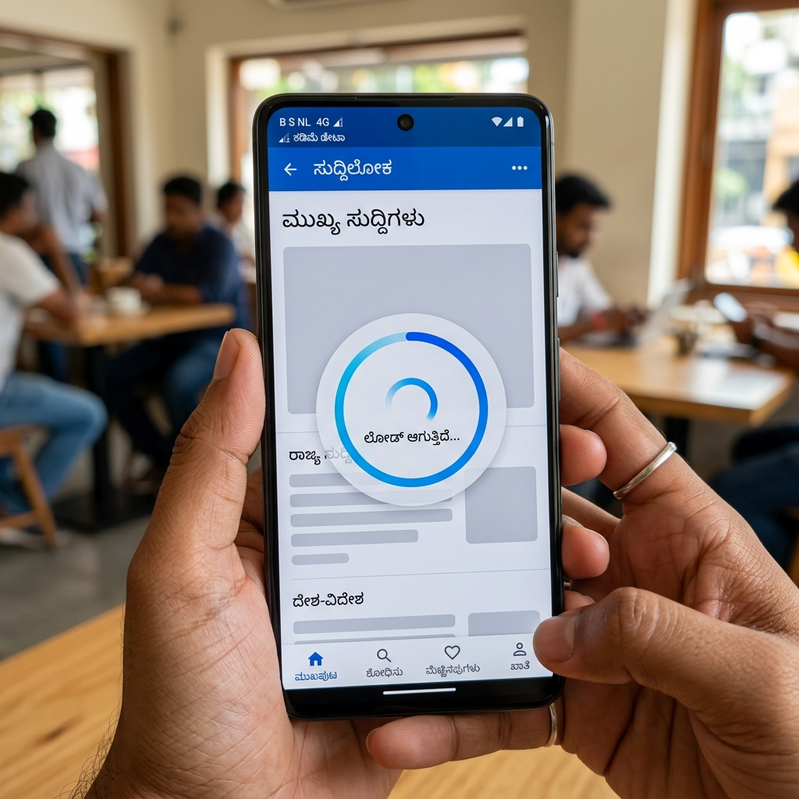

The "Next Billion Users" are already here. For Indian enterprises, scaling isn't just about handling more traffic; it's about handling varied environments.
The Connectivity Paradox
While India has some of the cheapest mobile data in the world, connection quality remains highly inconsistent. A user in Mumbai might have 5G, while a user in a rural district might be struggling with intermittent 2G/3G speeds.

Scaling for Bharat means building apps that are resilient to latency. This involves aggressive asset optimization, edge computing, and offline-first architectures.
Strategies for Mass-Scale Accessibility
- Regional Language Support: Beyond translation, it's about localization. Date formats, currency symbols, and even iconography must resonate with local cultures.
- Performance Over Polish: While "glassmorphism" looks great on a MacBook, it can cripple a budget Android device. prioritize CSS over heavy JavaScript animations.
- Edge CDN Strategy: Use CDNs with nodes specifically in Tier 2 and Tier 3 Indian cities to minimize the "last mile" latency.
The Lightweight Tech Stack
We've seen massive success using a "Headless" approach for Indian markets:
- Next.js Static Generation: Pre-render pages to HTML to ensure instant initial load.
- SQLite at the Edge: Move data closer to the user to reduce round-trip times.
- Service Workers: Implement aggressive caching to allow the app to function during brief outages.
Final Thoughts
The businesses that win in India aren't the ones with the most features; they are the ones that are consistently available and fast, regardless of the user's location or device.